dataset %>%
ggplot()+
geom_col(aes(dmLivingSit, gewissenhaftigkeit), fill = "#537188")+
theme_minimal()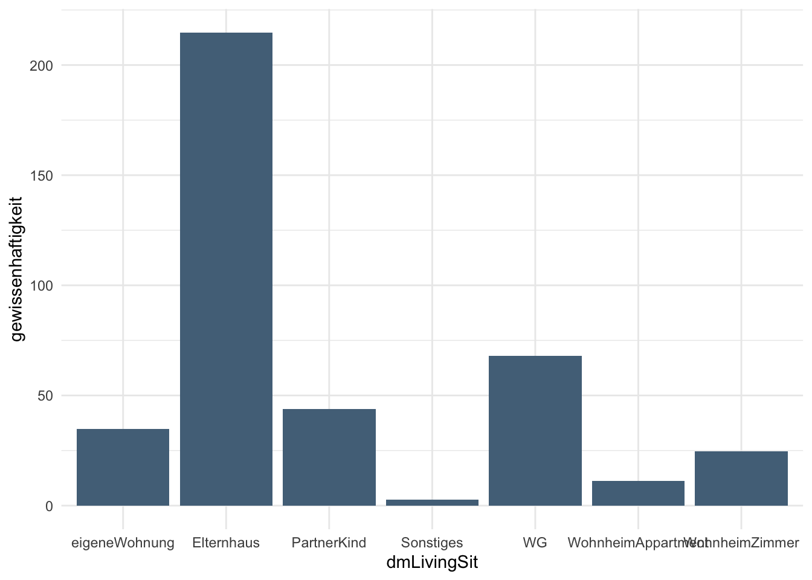
In diesem Abschnitt tauchen wir etwas tiefer ein in den Umgang mit Faktoren in Plots.
Wenn man nur kurz für einen Überblick einen Plot erstellt, ist die Lesbarkeit und Ästhetik weniger wichtig, aber wenn Plots für eine Abgabe oder Publikation gedacht sind, ist das Verhalten von Faktoren in Plots manchmal zum Haare raufen. Daher schauen wir uns schon mal präventiv an, wie man die Darstellung unter Kontrolle bekommt.
dataset %>%
ggplot()+
geom_col(aes(dmLivingSit, gewissenhaftigkeit), fill = "#537188")+
theme_minimal()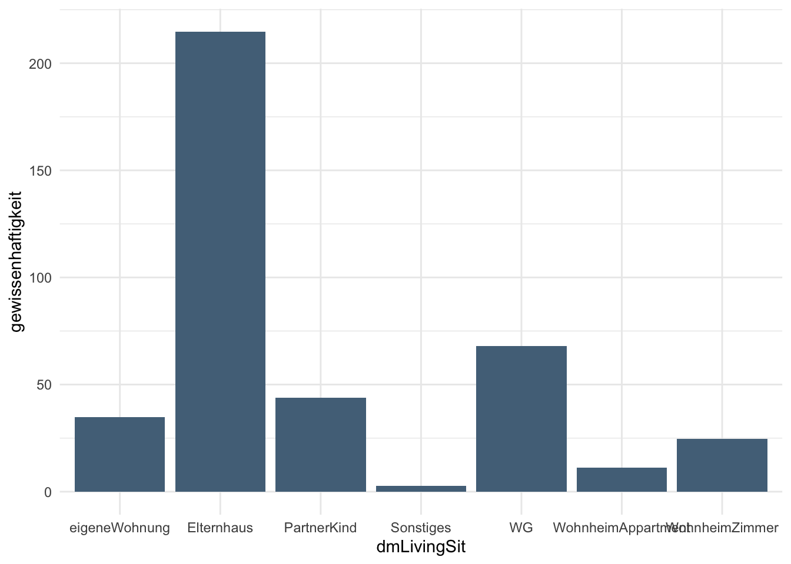
Standardmäßig sind die Faktoren alphabetisch sortiert - das ist häufig okay, kann aber auch nerven:
Manche Faktoren haben eine sinnvollere Reihenfolge (z.B. Monate)
Manchmal sind solche Graphen einfacher zu lesen, wenn die Balken nach Größe sortiert sind (z.B. Beliebheit aller Bundestagsmitglieder)
Die Kategorie “Sonstiges” hätten wir hier lieber als letztes in der Reihe
Um den Plot für uns schöner zu gestalten, können wir entweder direkt die Daten bearbeiten oder nur im Kontext vom Plot die Daten vorübergehend umändern.
Auch wenn es für das Datenhandling in und außerhalb von R besser ist, keine Leerzeichen oder Sonderzeichen in den Faktoren und Faktorstufen einzubauen, wollen wir unseren Plot natürlich lesbar haben.
Über fct_recode() können wir die Faktorstufen nach dem Prinzip neu = alt umbenennen. Nicht genannte Stufen werden einfach beibehalten.
Ein netter Trick ist außerdem, lange Labels mit \n mit einem Zeilensprung vom Überlappen abzuhalten. Dabei kann man \n einfach “dreist” mitten in den neuen Namen einfügen.
# Welche Stufen gibt es noch mal?
levels(factor(dataset$dmLivingSit))[1] "eigeneWohnung" "Elternhaus" "PartnerKind"
[4] "Sonstiges" "WG" "WohnheimAppartment"
[7] "WohnheimZimmer" # Plot mit ordentlich benannten Faktorstufen
dataset %>%
mutate(dmLivingSit = fct_recode(dmLivingSit,
"eigene Wohnung" = "eigeneWohnung",
"Partner/Kind" = "PartnerKind",
"Wohnheim-\nAppartment" = "WohnheimAppartment",
"Wohnheim-\nZimmer" = "WohnheimZimmer")) %>%
ggplot+
geom_bar(aes(dmLivingSit), fill = "#537188")+
theme_minimal()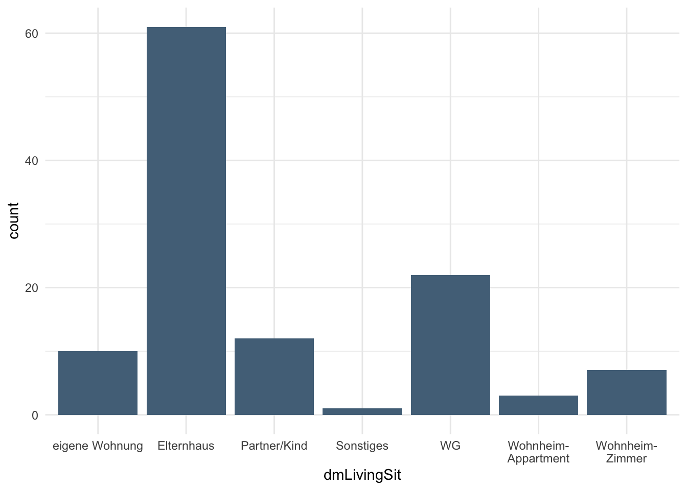
Häufig möchte man die Datenerfassung besonders sorgfältig umsetzen und fragt viele potenzielle Faktorstufen ab. In der Realität gibt es vielleicht nur wenige Teilnehmende, auf die eine bestimmte Faktorstufe zutrifft, sodass es sich anbietet, einige ähnliche Faktorstufen zusammenzulegen.
Hier setzen wir das mithilfe von fct_collapse() für die beiden Wohnheim-Ausprägungen WohnheimAppartment und WohnheimZimmer um.
dataset %>%
mutate(dmLivingSit = fct_collapse(dmLivingSit,
Wohnheim = c("WohnheimAppartment", "WohnheimZimmer"))) %>%
ggplot+
geom_bar(aes(dmLivingSit), fill = "#537188")+
theme_minimal()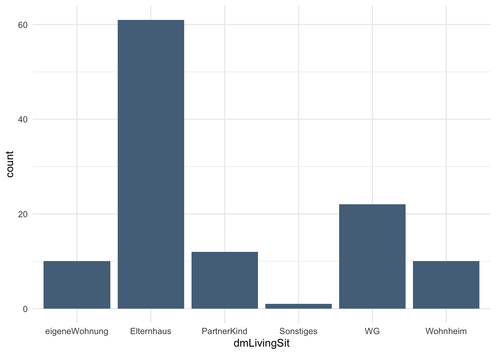
Für die Idee von “die kleinsten Reste zusammenfassen” gibt es verschiedene fct_lump-Varianten. In dem Beispiel hier bietet es sich eigentlich nicht an, wir demonstrieren es trotzdem.
Bei fct_lump_min() lässt sich über das Argument min = spezifizieren, wie häufig eine bestimmte Ausprägung mindestens vorkommen muss, um durch einen eigenen Balken dargestellt zu werden. Der Rest wird in einem Balken zusammengefasst und standardmäßig als “Other” bezeichnet, was sich über other_level = ".." ändern lässt.
summary(factor(dataset$dmLivingSit)) eigeneWohnung Elternhaus PartnerKind Sonstiges
10 61 12 1
WG WohnheimAppartment WohnheimZimmer
22 3 7 dataset %>%
mutate(dmLivingSit = fct_lump_min(dmLivingSit, min = 20, other_level= "Sonstiges")) %>%
ggplot+
geom_bar(aes(dmLivingSit), fill = "#537188")+
theme_minimal()+
ggtitle("Ausprägungen ab n>=20")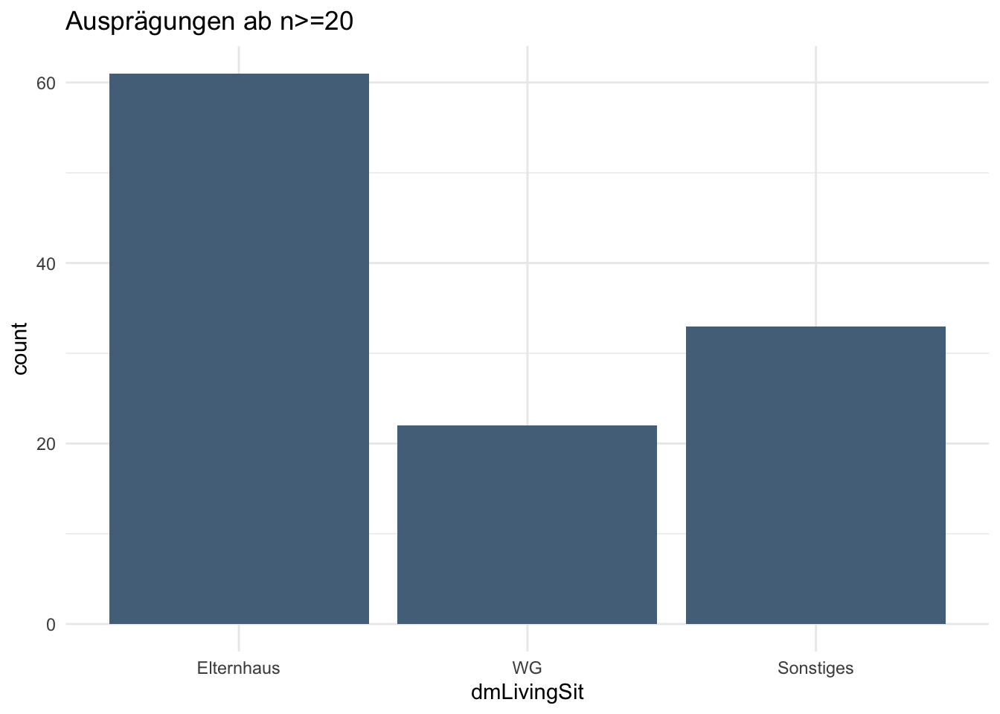
Ähnlich fasst fct_lump_prop() die Kategorien nach prozentualen Anteilen zusammen.
dataset %>%
mutate(dmLivingSit = fct_lump_prop(dmLivingSit, prop = 0.1, other_level= "Sonstiges")) %>%
ggplot+
geom_bar(aes(dmLivingSit), fill = "#537188")+
theme_minimal()+
ggtitle("Ausprägungen ab Anteil von 10%")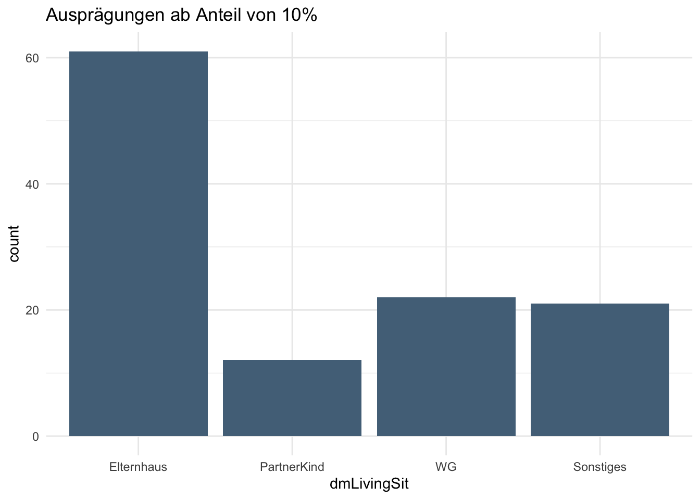
Andersherum können wir mit fct_lump_n() spezifizieren, wie viele Balken wir sehen wollen, also ab dem wievielten der Rest zusammengefasst werden soll (n+1). Dabei werden natürlich nicht einfach die n alphabetisch ersten Balken gewählt, sondern die höchsten.
dataset %>%
mutate(dmLivingSit = fct_lump_n(dmLivingSit, n = 4, other_level= "Sonstiges")) %>%
ggplot+
geom_bar(aes(dmLivingSit), fill = "#537188")+
theme_minimal()+
ggtitle("Reste zusammenfassen nach k=4")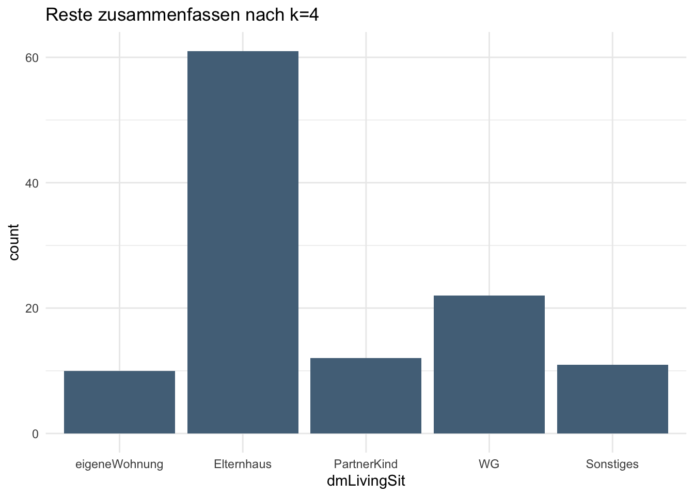
Zuguterletzt fasst fct_lump_lowfreq() die Ausprägungen mit den geringsten Häufigkeiten automatisch so zusammen, dass “Other” nicht größer als der nächstgröße Balken wird. Wenn man also viele Ausprägungen und nicht das Bedürfnis hat, die Anzahl der Balken genau festzulegen, ist das eine bequeme Option.
dataset %>%
mutate(dmLivingSit = fct_lump_lowfreq(dmLivingSit, other_level= "Sonstiges")) %>%
ggplot+
geom_bar(aes(dmLivingSit), fill = "#537188")+
theme_minimal()+
ggtitle("Reste so lange zusammenfassen, wie es der niedrigste Balken bleibt")
Aber Vorsicht: Wenn eine Ausprägung so häufig ist, dass die Summe der restlichen immer noch geringer ist, macht diese Funktion wenig Sinn, wie auch in unserem Plot zu erkennen ist.
Die Beispiele hier haben wir anhand von Balkendiagrammen und der Häufigkeit gezeigt, es funktioniert aber natürlich auch mit anderen geoms und anderen kontinuierlichen Variablen auf der Y-Achse:
dataset %>%
mutate(dmLivingSit = fct_lump_prop(dmLivingSit, prop = 0.1, other_level= "Sonstiges")) %>%
group_by(dmLivingSit) %>%
summarize(mean.gw = mean(gewissenhaftigkeit),
sd.gw = sd(gewissenhaftigkeit)) %>%
ggplot(aes(dmLivingSit, mean.gw))+
geom_point(color = "#537188", size=3)+
geom_errorbar(aes(ymin=mean.gw-sd.gw, ymax=mean.gw+sd.gw), width=0.1, alpha=0.3)+
theme_minimal()+
ggtitle("Ausprägungen ab Anteil von 10%")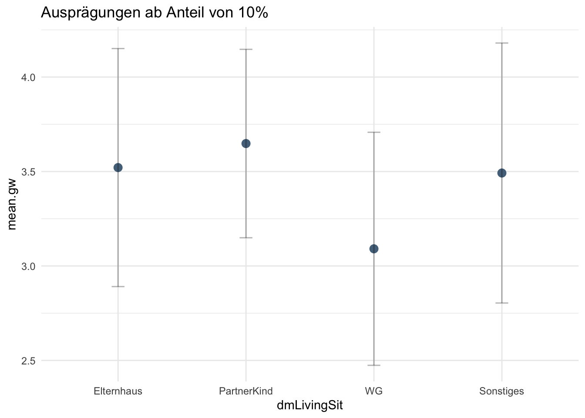
Wenn wir mit der Anzahl der Faktoren zufrieden sind, könnte uns aber immer noch die angezeigte, alphabetische Reihenfolge stören. Hier haben wir mehrere Möglichkeiten.
Die Funktion fct_infreq() ist vor allem für Barplots gedacht und sortiert diese nach Höhe.
dataset %>%
mutate(dmLivingSit = fct_infreq(dmLivingSit)) %>%
ggplot+
geom_bar(aes(dmLivingSit), fill = "#537188")+
theme_minimal()+
ggtitle("Sortierung nach Höhe, absteigend")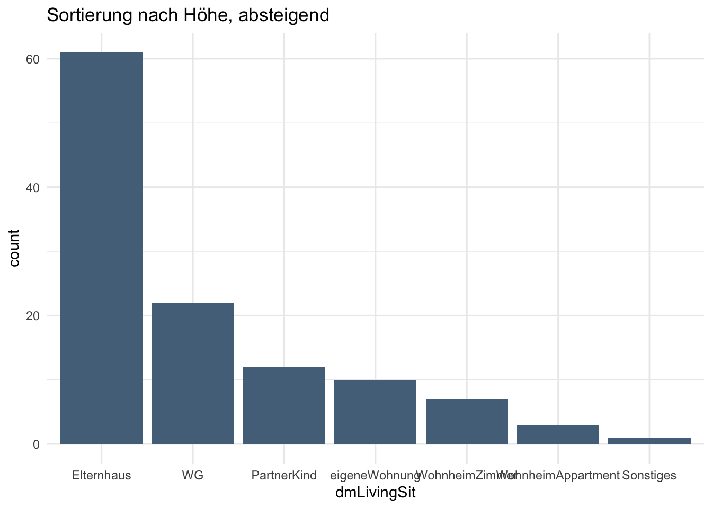
Für den Fall, dass wir mit der niedrigsten Ausprägung anfangen wollen, können wir ein fct_rev() ergänzen.
dataset %>%
mutate(dmLivingSit = fct_rev(fct_infreq(dmLivingSit))) %>%
ggplot+
geom_bar(aes(dmLivingSit), fill = "#537188")+
theme_minimal()+
ggtitle("Sortierung nach Höhe, aufsteigend")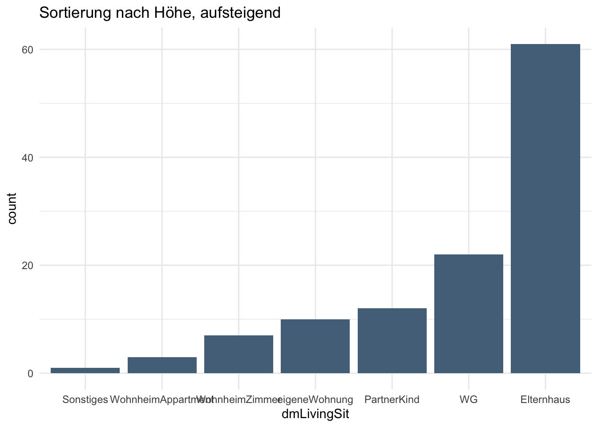
Mit dem Sortieren nach der Größe haben wir zufällig auch erreicht, dass die “Sonstiges”-Ausprägung endlich am Ende landet. Aber das lässt sich auch gezielt umsetzen, indem wir mittels fct_relevel() genau spezifizieren, in welcher Reihenfolge die Faktorstufen angezeigt werden sollen.
Dabei werden als Argumente neben dem Faktor alle Faktorstufen in der Reihenfolge genannt, in der sie auftauchen sollen: fct_relevel(dmLivingSit, "Elternhaus", "eigeneWohnung", ...). Über das Argument after= lassen sich alternativ eine oder mehrere Ausprägungen an eine gezielte Stelle platzieren.
dataset %>%
mutate(dmLivingSit = fct_relevel(dmLivingSit, "Sonstiges", after=Inf)) %>%
ggplot+
geom_bar(aes(dmLivingSit), fill = "#537188")+
theme_minimal()+
ggtitle("Sonstiges am Ende platziert")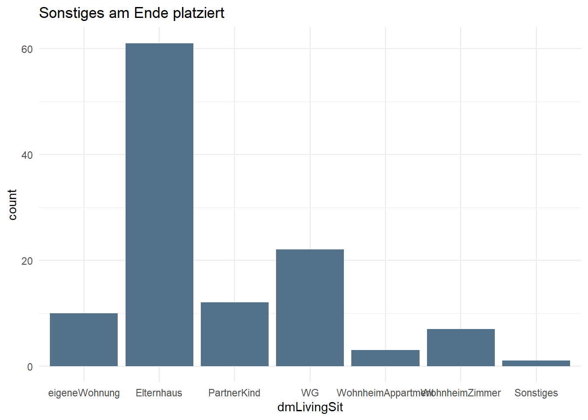
Es ist zwar praktisch, die Faktorstufen individuell sortieren zu können, aber abgesehen von Sonderkategorieren doch eher aufwendig. Besonders umständlich wäre es, wenn wir die Stufen der Größe nach sortieren wollen, aber es bei der Größe um die Ausprägung einer anderen Variable gehen soll. Da müssten wir die Variable erst pro Faktorstufe berechnen, nach Größe sortieren und dann die Reihenfolge übernehmen.
Glücklicherweise gibt es mit fct_reorder() eine einfachere Möglichkeit: Hier können wir eine Variable spezifizieren, deren Ausprägung die Reihenfolge vorgeben soll.
dataset %>%
group_by(dmLivingSit) %>%
summarize(mean.gw = mean(gewissenhaftigkeit),
sd.gw = sd(gewissenhaftigkeit)) %>%
ggplot(aes(x=fct_rev(fct_reorder(dmLivingSit, mean.gw)), mean.gw))+
geom_point(color = "#537188", size=3)+
geom_errorbar(aes(ymin=mean.gw-sd.gw, ymax=mean.gw+sd.gw), width=0.1, alpha=0.3)+
theme_minimal()+
ggtitle("Sortierung in Abhängigkeit von Gewissenhaftigkeit")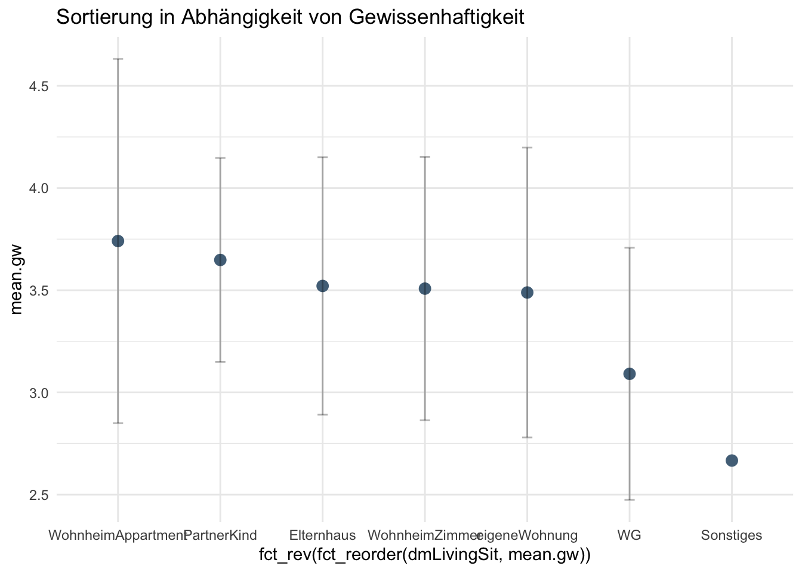
Hier in dem Fall taucht die fct-Funktion erst im Plot auf, da nach mean.gw sortiert werden soll und diese Variable erst mal im Kontext von summarize entsteht. Es funktioniert genauso, aber wenn man die Möglichkeit hat, ist es übersichtlicher, sie bei mutate auszuführen.
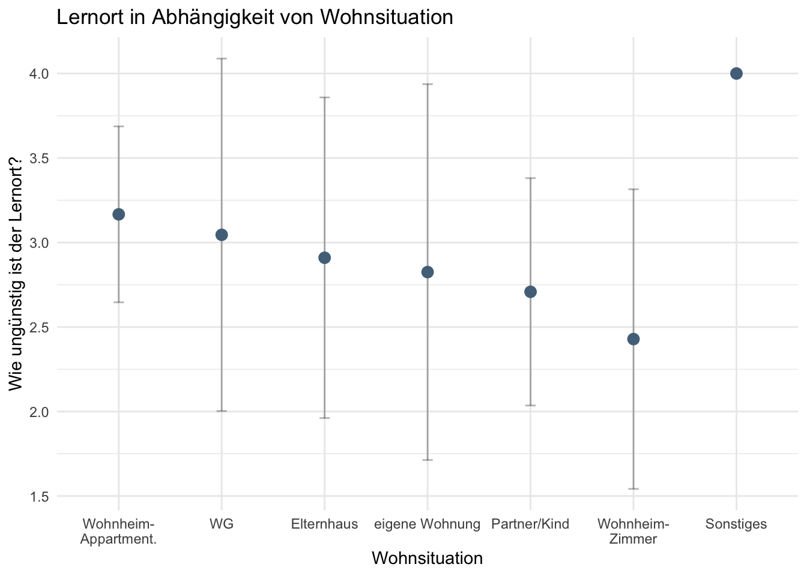